建筑机电
75 项 · 已选 0 项
建筑机械
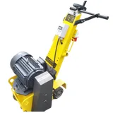
铣刨机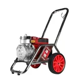
喷涂机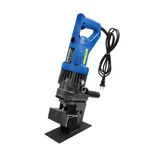
液压冲孔机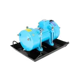
振动器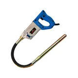
振动棒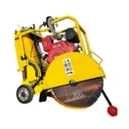
马路切割机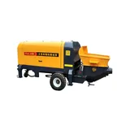
砂浆机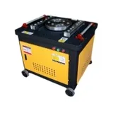
钢筋机械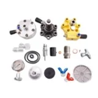
建筑机械配件机电类
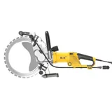
环锯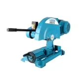
三相切割机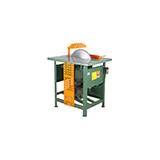
台锯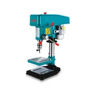
台钻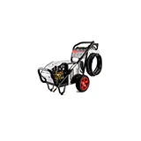
清洗机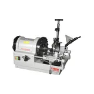
套丝机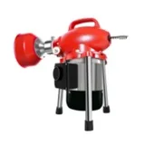
疏通机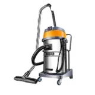
吸尘器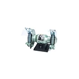
砂轮机水泵类
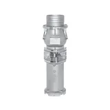
油浸泵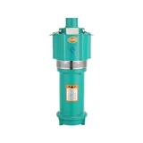
多级泵水泵控制器
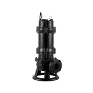
切割排污泵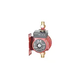
屏蔽泵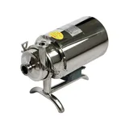
304不锈钢泵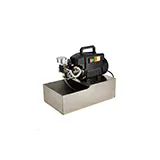
试压泵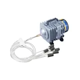
增氧泵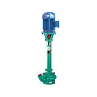
泥浆泵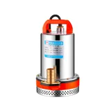
直流水泵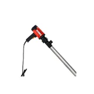
油抽泵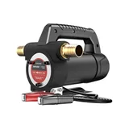
海水泵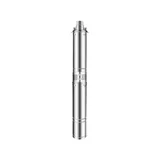
深井泵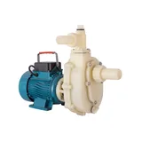
耐腐泵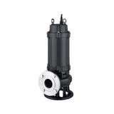
污水泵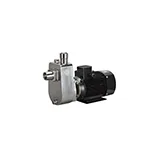
自吸离心泵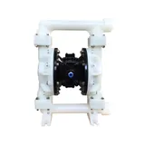
气动隔膜泵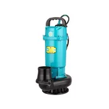
清水泵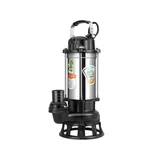
自吸排污泵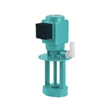
机床油泵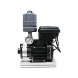
变频泵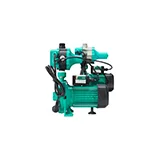
热水循环泵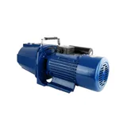
喷射泵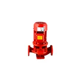
管道泵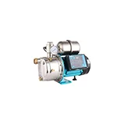
全自动增压泵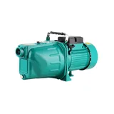
自吸泵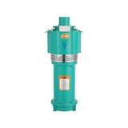
潜水泵汽油柴油机械
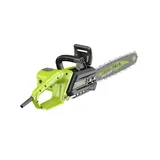
汽油链锯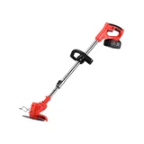
汽油割草机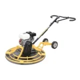
抹光机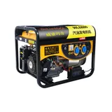
发电机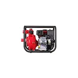
汽油机水泵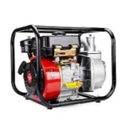
柴油机水泵园林机械
割草机
喷雾喷粉器
园林机械配件
电机配件
养护设备
电机机头
钢刷
电动工具线
六角/梅花角/八角
吊机开关
国标铜线圈
电容
护套
竹签
振动棒提手
风罩
风叶
接线柱
水泵配件/密封件
机械密封件
水泵线
油封
出水接头
过滤网
O型圈
压力开关